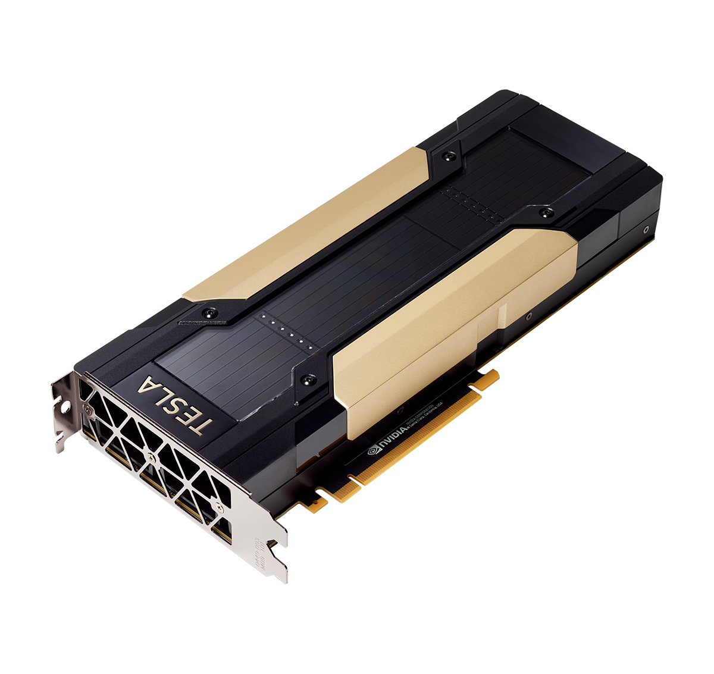

硬體規格分析
NVIDIA DGX Station 內部結構
展示四張 Tesla V100 GPU 的高密度配置
NVIDIA Tesla V100 GPU
Volta 架構的企業級 GPU，專為 AI 運算設計
GPU 記憶體
128GB
4 x 32GB HBM2
CUDA 核心
20,480
4 x 5,120 核心
FP16 效能
500
TFLOPS
搭載四張 NVIDIA Tesla V100 32GB GPU 的 DGX Station 是一套功能強大的 AI 工作站，其總計 128GB 的 GPU 記憶體理論上能夠以 FP16 半精度運行參數規模達 600億 (60B) 以下的大型語言模型。
關鍵限制：Tesla V100 的Volta 架構不支援 Flash Attention 等新世代加速技術，導致實際推理吞吐量明顯較低。
展示四張 Tesla V100 GPU 的高密度配置
Volta 架構的企業級 GPU，專為 AI 運算設計
128GB
4 x 32GB HBM2
20,480
4 x 5,120 核心
500
TFLOPS
公式：所需 VRAM (GB) ≈ 模型參數數量 (Billion) × 2
| 模型參數規模 | 所需 VRAM | 相容性 | 備註 |
|---|---|---|---|
| 7B | ~14 GB | 完全支援 | 可輕鬆運行，有充足空間 |
| 13B | ~26 GB | 完全支援 | 可輕鬆運行 |
| 32B | ~64 GB | 需要跨 GPU | 需要模型平行化 |
| 60B | ~120 GB | 理論極限 | 接近系統記憶體上限 |
| 70B | ~140 GB | 不支援 | 超出系統總記憶體 |
不支援
V100 計算能力 7.0，需要 8.0+ 才能支援 Flash Attention
不支援
僅支援 FP16，可能影響模型相容性
有限支援
vLLM 等框架無法使用最優化後端